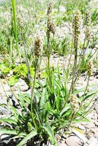
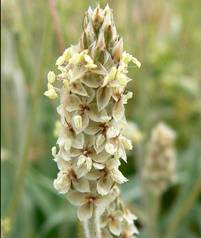
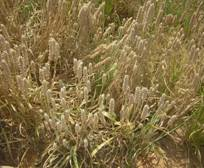
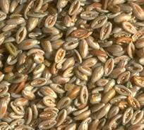
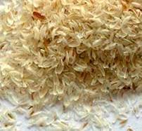

HORT 282 :: Lecture 33 :: ISUBGOL

ISUBGOL
(Plantago ovata Forsk., Plantaginaceae)
 Isubgol or Psyllium (Plantago ovata)is important for its seed and husk which have been used in-the indigenous medicine for many countries. II has the property of absorbing and retaining water (40-90%) and therefore it works as an anti-diarrhoea drug. It is beneficial in chronic dysenteries of amoebic and bacillary origin. The seed has also Cooling and demulcent effect and is used in Ayurvedic, Unani and Allopathic medicines. The husk yields a colloidal mucilage consisting mainly pf xylose, arabinose and galacturonic acid. In India it is grown in about 16,000 to 20,000 hectare in North Gujarat and it is also recently cultivated in small areas in Rajasthan, Haryana and Bihar. The husk and peel are exported largely to USA, West Germany, the UK and France, fetching a foreign exchange of more than crores annually.
It is a stemless annual herb often attaining a height of 30 to 40 cm, wit rosette leaves. The plant bears erect ovoid or cylindrical spike with minute white flowers about 45-68, protogynous. Fruit is capsule, each seed is encased in a thin, White, translucent membrane, the husk, which is odourless and tastless.
Climate and Soil
It requires cool and dry weather and hence in India, the crop is grown in winter i.e. from November - December to March - April. Humid weather, at maturity results in shattering of seeds. A light well drained sandy loam to rich loamy soil with a pH of 7 -8 is ideal.
Varieties
Gujarat Agricultural University has released two improved varieties viz. Gujarat Isabgol-1 and Isabgol - 2 which have a yield potential of 800 - 900kg and 1000 kg/ha. respectively.
Preparation of land
Field must be free of weeds and clods and should have fine tilth for good germination. The land is laid into flat beds of convenient size i.e. 1.0m x 3.0 m or 2.5 m or 2.5 m.
Sowing
Fresh seeds from the preceding crop season should be sown for getting high percent germination. The seed rate varies from 4 - 6 kg and is sown after pretreatment with thiram @ 3 g/kg of seed to protect the seedlings from the possible damage of damping off. The seeds, being small and light are mixed with sufficient quantity of fine sand before sowing. The seeds are sown broadcast and are swept lightly with a broom in one direction to cover them with some soil.
After cultivation
Timely weeding is important to encourage good growth of the plants. After 20-25 days of sowing, first weeding is done and 2-3 weedings are required within 2 months of sowing. It responds to manuring. 25 Kg N/ha and 25 Kg P/ha are applied as basal dose at the last ploughing and another dose of 25 Kg N/ha is top dressed 30 days after sowing.
Immediately after sowing light irrigation is essential. First irrigation should be given with light flow of water. The seeds normally germinate in 6 -7 days. If the germination is poor, second irrigation may be given. Later on irrigations are given as and when necessary. Last irrigation should be given at the time when maximum number of spikes has reached the milk stage.
Harvesting and processing
 The crop will be ready in about 110-130 days after sowing. When mature, the crop turns yellowish and the spike turns brownish. The seeds shed when the spikes are pressed even slightly. At the time of harvest the atmosphere must be dry and there should not be any moisture on the plant.
The plants are normally cut at the ground level or uprooted if the soil is loose textured. The harvested plants are threshed and winnowed, and the seeds repeatedly sifted until clean. The seeds may be marketed whole or the husk may be sold separately. Seeds are fed to a series of shellers; in each sheller the grinding pressure is so adjusted to remove only the husk. This is separated by fans and sieves at each sheller and the ungrounded material is sent to the next sheller. The husk: seed ratio is 25:75 by weight.
The average yield is about one tonne of seeds per hectare.

| Husk | Seed |
Plant protection
Downy mildew caused by Peronospora plantaginia is the serious disease at the tiine of spike initiation. Spraying of copper oxy chloride or Dithane Z.78 @ 2.0 g/litre of water is recommended as a prophylactive measure on 30th day from sowing and repeated twice, at an interval of 15 – 20 days.
************
- Isabgol belongs to the family ___________
- Sceintific name of Isabgol is ____________
- Economic part of Isabgol is ____________
- Two improved varieties of Isabgol ___________
- Mention the stage of harvest in Isabgol _________
| Download this lecture as PDF here |